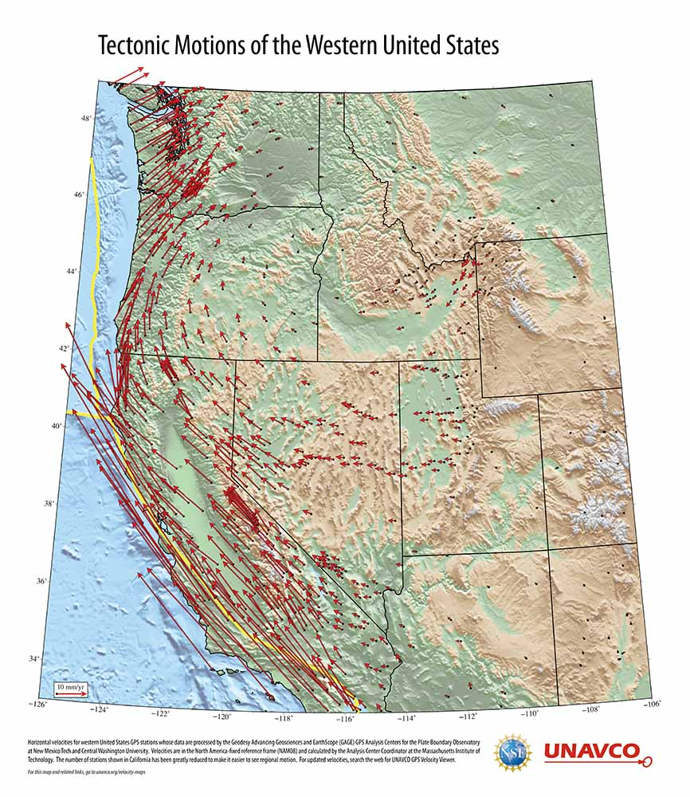
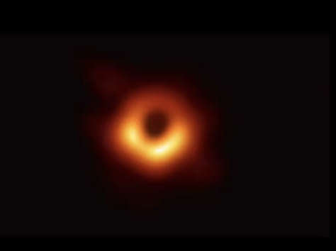

HYPERCASTING
High precision simulations of past, present, and future scenarios.
Forecasting describes a method of simulation which projects and details likely, future scenarios.
Depending on the desirability of each scenario, it’s definition represents an effort to either avoid or
move towards it. Forecasting has the potential to influence behaviour and choices in the present and
becomes in turn shaped by these altered conditions. Though speculation is always present, plausibility is
the currency of forecasting. As such, it must be grounded on the highest resolution of analysis and
observation. Climate models are an example of forecasting.
“There's this great irony in that man thought he was designing the world for man, but man actually designed it for machines”
A question about Homo Sapiens which has been posed all along: to what degree does knowing whether it's us, or the system at large, enable the sufficient conditions for the intentional negative structure to come?
A platform is a type of system that provides the grounds or basis for future action

Map of southern California showing active faults and motion of sites with continuous GPS monitoring
Map of southern California showing active faults and motion of sites with continuous GPS monitoring
Babbage was a narc.
SEMIO-MIMETICS
Simulations based on models of cognition and interpretation.
Models of cognition describe the way different entities understand and relate to the world around them.
These models use abstraction to assign intention to different beings and predict their behaviour. Models
of cognition are based in observation and analysis and centre the individual. An example of the deployment
of such models is the creation of ‘agents’ for computational models of behaviour.
Simulating the world around you in order to interact and move through it - how do you relate to the world
Modelling to create the necessary conditions for understanding behavioral patterns of other beings
Cognition: a process that interprets information within a context that is connected with meaning
“Where there is life, there is cognition”
“Unicellular organisms have cognition – they move towards food they move away from toxins”
“To have meaning you don't have to have abstract symbols or language such as humans have, but rather biological behavior can be understood as cognition in action”
All life forms have their specific umwelten
“Lifeforms perform actions that have meaning to them”
Cognitive Assemblages: collectivities of human, non-human and computational media through which information, interpretations and meanings circulate
Cells and cellular processes are competent problem-solving agents with agendas
Cells use their cognitive abilities to arrive at new solutions
“The notion that it's legitimate to make an analogy between a computer and human brain, or to think of and language in terms of codes or cultural codes – it's essentially the human scientists making these suggestions to the engineers”
Operational images correspond to the list of operations that expand to a different register of epistemic and aesthetic features
The human as a symbol-manipulating species.
Computation is a toolkit for navigating continuous spaces, bounded only the expressive limits of language for describing structures
To realize the world becomes about our ability to create a topological site to identify entities that are said to inhabit our world
The ocean in “Solaris” remains unknowable—confronting humans with how inadequate and restrictive our own cognition is
Central in Lem's work is a realization that humans cannot figure or imagine real otherness. Humans are just looking for cognitive patterns already familiar to us rather than something legitimately alien.
“What is the use of an intelligence we can't understand?”
DE-CHAOS MODELS
Simulations that draw out new legibility from complex systems.
Models of complexity describe wide and diverse networks of forces and actors that exceed the perception of
individuals. These models rely primarily on quantitative analysis and deploy abstraction, reduction and
simplification to make complex systems legible to individuals. Examples of Models of Complexity include
climate models, as well as population analysis (as described by Bernard Geoghegan for eugenics and kinship
cybernetic theories).
“How is it possible that all of these things came together to enable this – that an infrastructure traversing the globe would enable these self propelling machines?”
“Cognition is modular, each level builds on its capacities to enable the larger goals of the next level up to emerge. Single cells know local information about environments but network of cells integrate signals across distances, store memories of patterns, and compute large-scale outcomes”
“There are many ways media can manifest, and it ultimately picks a medium”
“Addressability emerges as a series of mechanisms by which the link between the symbolic – alphabets, numbers, addresses – and the physical, that is the material location, are stabilized”
The planetary's architectural imaginary is a partial, modelled, visualised, bordered, fragmented, multi-scalar entity in which images recursively participate in various kinds of material transformations
Operational images are part of a larger system of analysis, identification, tracking, and destruction. Reinforced is the coupling of perception and action, and of images that control, regulate, and amplify how bodies operate.
Laplace's statistics (knowing the past to clarify the past and also predict the future) make complexity legible.
There is a "deluded hubris" to assume a simple causality between what we design, what we want to happen, and the actual outcomes we see in the world of our plans. History proves that no matter how controlled our planning is, there are always unintended consequences.
“What if humans are a phase in the history of technology?”
PHANTOMATICS
Sensorial simulations that artificially instantiate the un-sensable.
Phantomatics is a term coined by Stanislaw Lem in his Summa Technologiae to indicate a speculative
method connecting an individual's sensorium to artificially induced sensations. The term is useful to
describe simulations that centre the viewpoint and perception of the individual human or non-human being.
Example of Phantomatics are VR technology and its sensorial counterparts, or NASA's simulations of
off-planet experiences
Rather than advertising their cars, Ford was inserting a new socio-technical configuration into everyday life through the cinematic matrix
Phantomatics center the perception and experience of the individual human or non-human being
Operational imaging enforces an abstraction and alienation through aesthetic constraints, extracting or modifying the sensorium into a form of disembodiment
“I invite you to join me in this crazy way of thinking about science, in which we take take seriously the coming into being of non-existent entities”
“We are creatures with the capacity to create fictitious or artificial worlds, for which Wynter deems us as Homo Narrans or narrative creatures”
We are creatures that can create fictitious narrative worlds.
“[The gravitational model of Earth] is a physically and terrestrially impossible image”
Visualisation of the Farallon Plate, a tectonic plate that disappeared under North America millions of years ago
Measuring gravity changes over voids in London’s ground
Architecture Apophenia: a tendency to identify intentional structures in ground analysis images.
Lem’s fiction was a mode of simulating alien or non-human-centric scenarios that probed deeper into existential questions of the human condition.

Reconstructed image shows the boundary between light and dark around a black hole, called the event horizon. The image of the black hole is an image reconstructed from data around it, because it in essence, is not there. And this makes apparent the case around operational images which often use data captured to try to construct something that is inherently not enabled in the visual sense into a visual sense.
Reconstructed image shows the boundary between light and dark around a black hole, called the event horizon. The image of the black hole is an image reconstructed from data around it, because it in essence, is not there. And this makes apparent the case around operational images which often use data captured to try to construct something that is inherently not enabled in the visual sense into a visual sense.
SIMUTATIONS
Simulations translated and mutated from other media contexts.
Simutations are models which have been translated from one field of knowledge or medium to the other. In
an act of forced abstraction, simutations generate productive forms of estrangement from the object of the
model. Simutations across media can also reveal the affordances and limitations of different means of
organising information. An example of simutation is the way – as described by Ranjodh Singh Dhaliwal –
computers are modelled after cities.
“The film, photographs, transcription protocols and tapes that documented tribes in Bali represented a form of novel ethnographic writing intended to be ‘pure, unmediated, objective’ – allowing indigenous cultures to account for themselves”
The Cyberfeminism Index translates content across different mediums > Spreadsheet > Book > AR > Website > Book
“Duplication is key to replication”
“The computer simulates a city which has implications in how computational processes fundamentally work”
When the machine does not have an internal vocabulary of its own, the translation happens from the external world to the internal world of the machine
When the machine does not have an internal vocabulary of its own, it pulls from the external world into its internal world.
Reconstructed images are speculative, yet entirely real
“What images have become is fleeting components in vastly distributed infrastructures”
The attempt by Jesuit missionaries in China to introduce perspective meant advocating for the convergence of sight with a particular operation of localization inherent to its space of reasons
1607: Euclid is big in China.
1689: Leibniz bases his binary arithmetics on I-ching hexagrams.